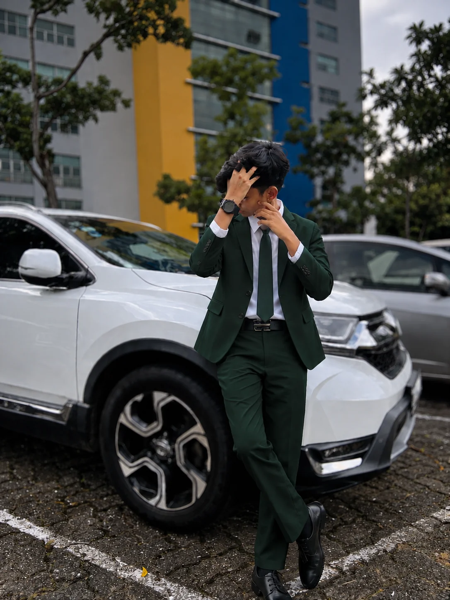
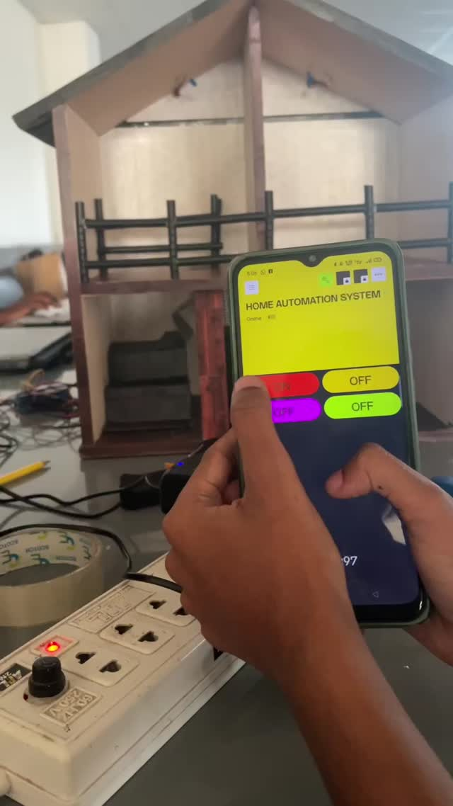
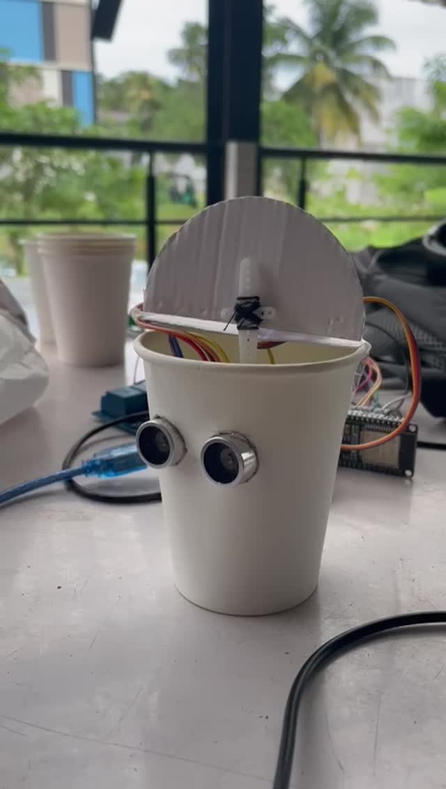

2025 — PRESENT · UNDERGRADUATE
Sri Lanka Institute of Information Technology (SLIIT)
BSc (Hons) in Information Technology — Specializing in Software Engineering

Exploring technology, creativity and real-world solutions through software engineering, IoT and beyond.
Where technology, curiosity and creativity come together.
I'm Karunarathne S.M.N.A., a Software Engineering undergraduate at the Sri Lanka Institute of Information Technology (SLIIT), currently in my second year, first semester, specializing in Software Engineering.
My journey began in the Arts stream, where I earned AAC at the G.C.E. Advanced Level examination and received university selection to Eastern University, Sri Lanka. I chose to follow my growing passion for technology and software engineering at SLIIT.
I also hold an IT diploma from ESOFT Metro Campus (2024) and an English diploma from Rajarata University. At SLIIT, I play carrom and am a member of the SLIIT Leo Club. I'm interested in building useful digital solutions, experimenting with IoT and Arduino, and exploring visual creativity through photography and editing.
A foundation shaped by academic achievement, professional qualifications and a deliberate transition from the Arts stream into software engineering.
BSc (Hons) in Information Technology — Specializing in Software Engineering
Diploma in Information Technology
Diploma in English
AAC Results · Selected to Eastern University, Sri Lanka
Skills and interests I continue to explore. These are areas of focus, not claimed proficiency scores.
Problem solving, building digital experiences and learning the software development process.
Connected devices, practical experimentation and technology in the physical world.
Hands-on exploration of electronics and interactive hardware concepts.
Composition, visual storytelling and creating thoughtful digital imagery.
Programming and web technologies in my learning journey.
Selected hands-on builds and software work — from hardware prototypes to digital solutions.


A hands-on home automation prototype combining smart lighting control and a touch-free ultrasonic smart dustbin — designed to explore everyday convenience, energy efficiency and hygiene.
Future showcase for applications, screenshots, features, technologies and repository links.
Two connected ideas, one practical prototype. Watch the real project demonstrations below.
Light-dependent sensing and relay-based switching, with a mobile-control interface shown in the prototype demonstration.
An ultrasonic sensor detects a nearby object and triggers a servo motor to lift the lid without physical contact.
Explore simple, affordable automation that can reduce unnecessary lighting use and make shared spaces more hygienic.
Arduino microcontroller technology, ESP32 programming with Arduino IDE, breadboard and jumper wiring, plus Wokwi for schematic design.
First-year, first-semester group project at SLIIT (IT1140). Presented by team WD97; this is a team project, not a solo build.
Community involvement, sport and continuous learning are important parts of my university experience.
Playing carrom at SLIIT, developing concentration, patience and strategic thinking beyond the classroom.
Sports & recreation ↗Member of the SLIIT Leo Club, taking part in a community that values service, collaboration and personal growth.
Club membership ↗Building a multidisciplinary foundation through software engineering studies, an IT diploma and an English diploma.
Lifelong learning ↗Competed at the John Tarbet athletics meet, earning 1st Place in the 200 m sprint and 2nd Place in High Jump.
200 m — 1st · High Jump — 2nd ↗A curated collection of original photography — exploring architecture, streets, natural light and the beauty of everyday moments.
Explore more moments, perspectives and visual stories through my lens. Follow @yaz_semasinghe for more of my photography.
Explore My Instagram ↗Press Esc or ✕ to close
Have an idea, an opportunity, or simply want to say hello?